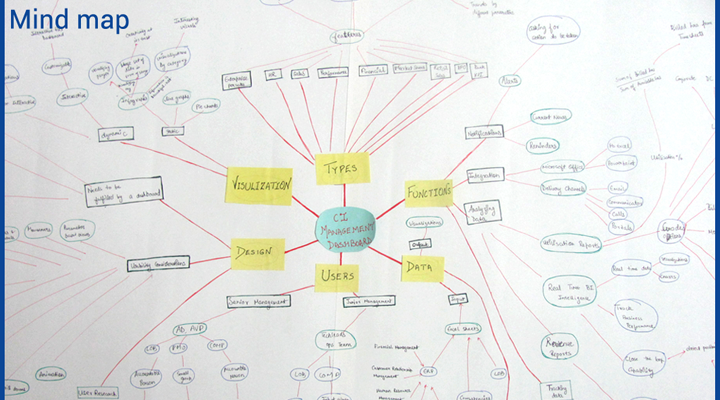
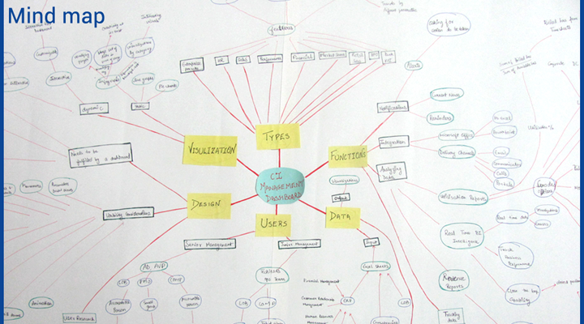

Cognizant Interactive
Online Executive Dashboard Summer Internship at Cognizant Technology Solution Duration:May 2012-Jul 2012 Project Manger:Associate Director Suhas Bendre,Cognizant Interactive Role : User Experience Designer Keywords:Education,interaction design,doubt clearance,introvert
Introduction
The project was done as part of my summer internship from May2012 -July2012 at Cognizant Interactive, design and business unit of Cognizant technology solution.
Given Design BriefDesign of an online dashboard system for cognizant interactive(design and business unit of cognizant). Cognizant Interactive management (Upper, Middle, Lower) was facing problem with visualizing reports and Business Intelligence as there is too much data to be studied from excel sheets. There is no online executive dashboard system where the Upper management can see dynamic reports BI to take decisions. In present system the whole data is entered by Lower management in excel sheets this data is manually sent to the Upper and Middle management. These reports that are following internal management structure for tracking performance are also not mapped to Cognizant Enterprise Resource Planning (ERP). Due to this the management needed an internal online portal which will give different type of reports in form of dynamic visualization and as well automate the whole process.
Brief Description of Process followed
Secondary ResearchInitial involved literature study,comparative study and benchmarking, understanding current flow of information and data to be displayed,problems existing in current scenario as well as researching about dashboards,data visualizations etc
Primary Research(Contextual Inquiry ,User interviews and Card sorting)In the next phase I conducted user interviews to understand about the problems faced by Global Competency(GCL) Head and GCl Leads in seeing data in current scenario,type of data that they want to see daily etc. and done card sorting to make priority list of reports that they see daily. These user interviews helped me in understanding what problems the managers were facing in the current scenario as well understand the hierarchy in which they need to see the data on the basis of their role.
Research Analysis(New Design Brief,task flows,Information Architecture)In this phase I analyzed all the user research,card sorting etc to redefine design brief i.e. To make a separate homapage for every user groups on basis of their Roles and Key Result Areas having seperate login system. The portal would also help the manager to perform the various other tasks related to his role. The information architecture was made on the basis of results from card-sorting by two user groups.
Prototyping and ConclusionFinally I made the high fidelity mockups for two user groups -GCL Head and GCL Lead
The internship provided me first time opportunity of learning some of the methods and process involved in user centered design process which I truly enjoyed.It also taught me how to conduct user studies(interviews,card sorting,etc) in a corporate scenarios and settings.As a whole it was a great learning experience for me as a user experience designer and researcher. *All Copyright @cognizant